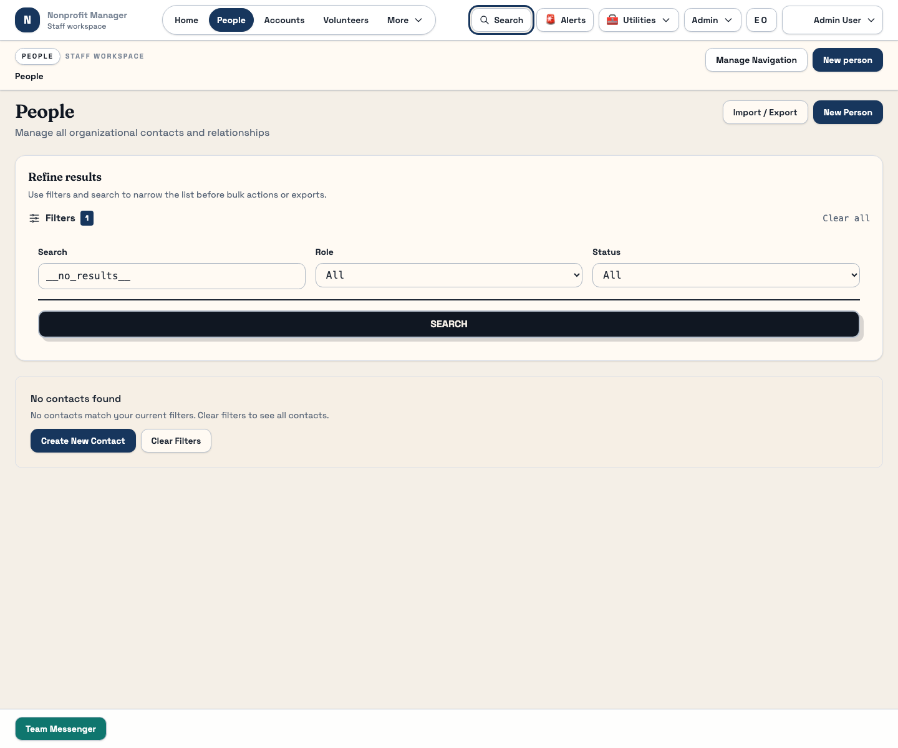
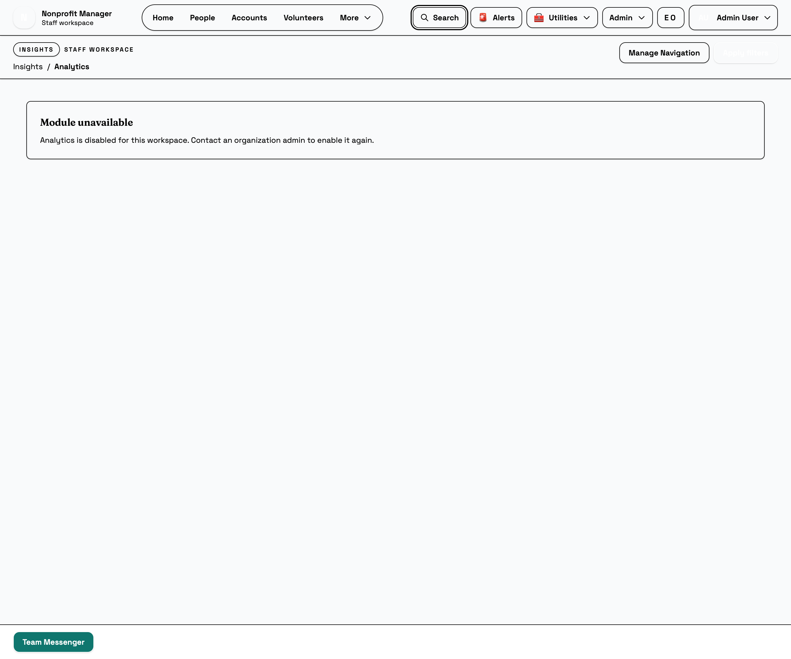
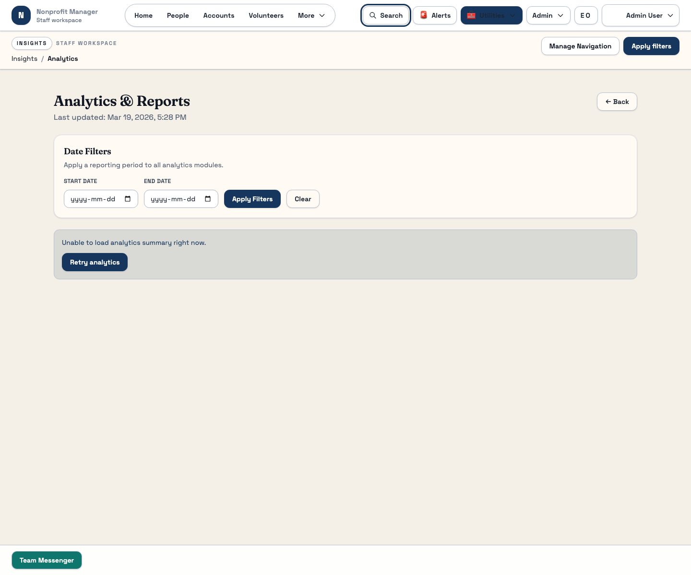

FAQ and Troubleshooting
Use this triage guide before you escalate a staff issue
Most day-to-day issues in the stable staff workspace come down to filters, permissions, page state, or working in a changing area. Follow this guide in order so you can rule out the common causes before you escalate.
What this page is for
Use this guide whenever a stable staff workflow looks wrong. It is designed to help you rule out the most common causes before you escalate to an admin or technical contact.
Before you start
- Write down the exact page or route where the issue happened.
- Note whether you were on a list page, detail page, or modal dialog.
- Check whether the workflow belongs to a stable guide or a changing area.
Steps
- If you see no results, clear filters first. Many staff pages support search, status filters, or remembered state. Empty results often mean the page is still filtered.
- If an action is missing, check permissions and route access. Missing buttons or routes usually point to access or role configuration rather than a broken page.
- If a page fails to load, retry once after refresh. Look for a visible retry control and confirm the issue persists before you escalate.
- If a record seems missing, widen the search. Try alternate spellings, clear filters, and confirm that you are in the correct module.
- If the screen looks unfamiliar, check the Changing Areas appendix. You may be in a part of the app that is intentionally not yet covered as process-of-record.
- If you still need help, escalate with useful context. Share the route, what you clicked, the approximate time, and whether anyone else can reproduce it.



What happens next
After you use this triage path, the issue should either be resolved or clearly framed for escalation. That saves time for both operations staff and whoever supports the system.
Common mistakes
- Reporting a missing record without clearing filters first.
- Escalating a permissions problem as a data-loss issue.
- Using a changing-area screen as if it were already part of the stable manual.
- Sending a support request without the route, page, or action that failed.
Related guides
Need help?
Use the most concrete language you can. Good escalation notes include the exact route, the record or event name, the action attempted, what you expected, and what actually happened.